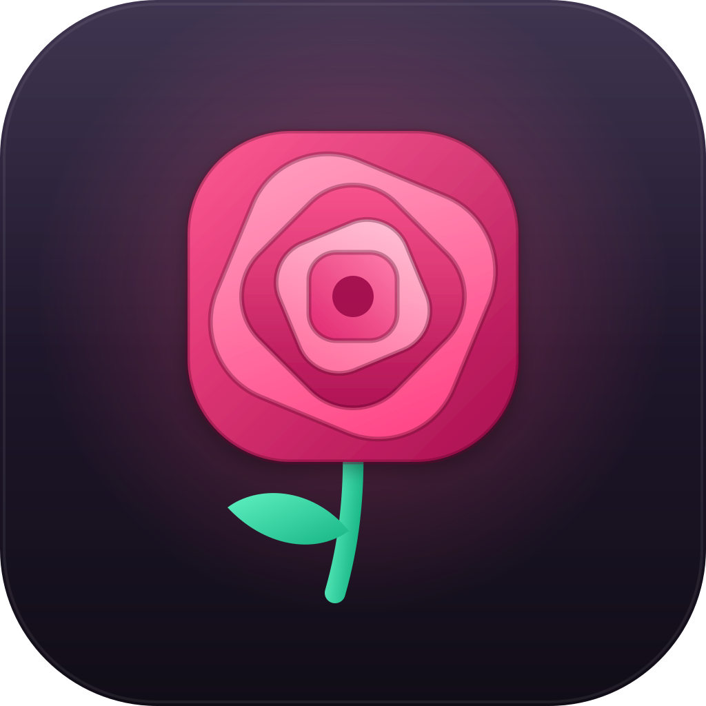

Rose
Loop
Click
Arrange
Session
1.1.1
0:00.0
Tempo
Add track
Library
File
↶
↷
Graphite
Slate
Daylight
?
Zoom
Snap: beat
Snap: 1/8
Snap: 1/16
Snap: off
Editor
Sound & FX
Mixer
Plugins
Instrument
Synth for leads, chords, bass and pads
Drums
Kick, snare, hats — click steps to make a beat
Audio / vocals
Record a mic or drop in audio files
Sampler
Play any sound across the keyboard
Group bus
Mix several tracks together (drums, vocals…)
External MIDI
Play SHRUB, an FM-1 or a hardware synth
New song
Start fresh (you can undo)
Open project…
A .rose file
Save project
Download a .rose file (Ctrl+S)
Import audio…
WAV, MP3, M4A, OGG, FLAC
Export WAV
Mixdown of the whole song
Install Rose app
Get Rose on your Dock / desktop — works offline
Download desktop app
Mac & Windows — runs VST3 / AU plugins
Rose Studio
Rosenfeld Productions
Start with a demo beat
Drums, bass and chords ready to play
Blank song
Empty tracks, your idea
Open a project
A .rose file you saved
Press ? for help. Space plays. The A to ; keys play notes.